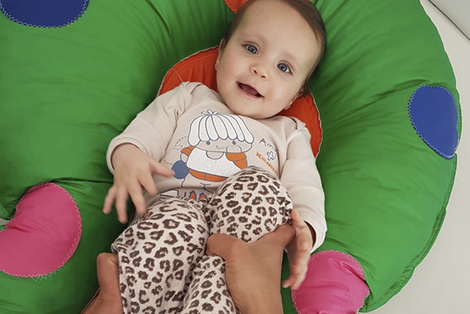

Berçário
Cuidado e educação num ambiente tranquilo, que transmite confiança, afeto e aprendizagens que fazem sentido para os bebês. Cada bebê é acompanhado individualmente por profissionais qualificados, com supervisão direta da coordenação.
Turmas: Berçário I e Berçário II, a partir de 4 meses.
